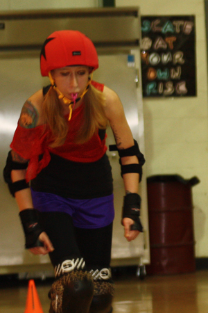

The Iron Mountain Roller Girls (IMRG) are an all female, local roller derby league that began forming in August 2010 in Cumberland. The league is open to women 18 years old and up, and will become part of the national Women’s Flat Track Derby Association (WFTDA). Roller derby’s unique amateur sports model has fostered an explosion in the sport’s global popularity; currently there are over 450 leagues across 11 countries around the world.
This league, while new, already has athletes and volunteers that are passionate about this sport and the creation of a local league. IMRG is incredibly proud of the hard work that both our athletes and our volunteers have put forth toward the creation of this league. Many of the modern women’s flat track roller derby leagues have begun as grass roots organizations created by fans of the sport who wanted to become personally involved, and IMRG is excited to be part of that tradition.
There are however many expenses connected with creating and running a roller derby league and we rely for funding solely on our own fundraising events and the support of local businesses. The major expenses for this league are paying for rink rental, uniforms, travel expenses, and training equipment/expenses. This is where your generous sponsorship could help.
IMRG has developed a variety of sponsorship package levels to make it easy for potential sponsors to choose a level of support that is both the most beneficial and most affordable to suit their needs. However, because IMRG recognizes that every business is different, and because IMRG is committed to doing all we can to work with the community and local businesses to benefit all those involved, we also have a “Build Your Own” package available. This package provides the ability for you as a potential sponsor to build your own sponsorship package that is the most beneficial to you if you do not already see a package you are comfortable with. For more information on our sponsorship packages please see our downloadable brochure.
While this is a new sport to the area we have received a great reception from the local community. We feel that the introduction of an activity to Cumberland that provides spectators with both athleticism and entertainment will prove to be a popular event that draws many fans and much publicity for years to come.
If you would be interested in sponsoring IMRG you can download our sponsorship brochure from our website. You may also contact our Sponsorship Committee via email at:
sponsor@ironmountainrollergirls.com
We do hope that this is something you might be willing to consider. Now is the time to cement a partnership with this high-profile sport that Bob Dotson of NBC Nightly News has called “the fastest growing sport in America.”